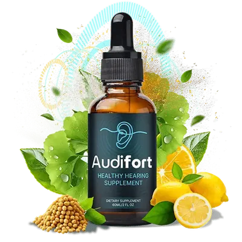

Audifort markets itself on having "20+ plant-based ingredients," but a long list isn't the same as a good one. So we went through the formula the vendor publishes and looked at what each headline ingredient is actually there to do — and what the evidence honestly supports.
One caveat up front: Audifort groups its ingredients into a proprietary blend, so the exact milligram dose of each isn't disclosed. That's common in this category, but it means we can describe what each ingredient is known for — not confirm it's present at a clinically studied dose.
An Andean root traditionally used for stamina and stress resilience. In a hearing formula, its relevance is indirect: chronic stress and elevated cortisol are linked to how strongly people perceive tinnitus, so an adaptogen is included to support the stress side of that loop.
Evidence: solid traditional use for energy/stress; direct hearing evidence is limited.
Probably the best-supported ingredient here. It's rich in OPCs (oligomeric proanthocyanidins) — antioxidants studied specifically in the context of inner-ear health, where oxidative stress damages the delicate hair cells involved in hearing. It's also associated with healthy blood-vessel function.
Evidence: among the more-studied antioxidants for auditory tissue.
GABA is the brain's main calming neurotransmitter. The rationale for including it: tinnitus involves overactive auditory nerve signaling, and calming that overactivity is one plausible way to reduce how intrusive the ringing feels. It's one of the more mechanistically interesting additions.
Evidence: strong theoretical basis; oral GABA absorption is debated.
Provides catechins, well-studied antioxidants that help protect cells from oxidative stress and support healthy circulation — the same oxygen-delivery-to-the-ear logic that underpins much of this formula.
Evidence: robust general antioxidant data; hearing-specific data is indirect.
A pepper extract traditionally associated with circulation and warmth (vasodilation). Its job in the blend is to support blood flow — helping carry the other ingredients and oxygen toward the inner ear.
Evidence: recognized circulatory properties; supporting role.
A botanical from traditional herbal practice, best known for metabolic and blood-sugar support. Its inclusion reflects the formula's broader "whole-body" angle — the idea that metabolic health is an upstream factor in age-related decline.
Evidence: metabolic use is well-documented; hearing link is indirect.
Step back and a clear logic emerges. Rather than one "miracle" compound, Audifort stacks ingredients across three pathways that all feed the same goal — a healthier inner ear:
1. Circulation (grape seed, green tea, capsicum) — get oxygen and nutrients to the ear.
2. Antioxidant protection (grape seed, green tea) — defend hair cells from oxidative damage.
3. Neural + stress calm (GABA, maca) — quiet overactive signaling and the cortisol loop.
Whether the doses inside the proprietary blend are high enough to matter is the honest open question — but the design of the formula is coherent, not a random kitchen-sink list.
The formula is plant-based and non-habit-forming, made in an FDA-registered, GMP-certified US facility. That said, "natural" isn't the same as "risk-free for everyone." A few ingredients — grape seed, green tea, and ginkgo-type extracts — can interact with blood-thinning medication. If you're pregnant, nursing, on prescription meds, or managing a medical condition, check with your doctor before starting.
The headline ingredients include Maca Root, Grape Seed Extract, GABA, Green Tea Extract, Capsicum Annuum, and Gymnema Sylvestre, among 20+ total plant-based ingredients in a liquid drop format.
The label lists the ingredients but groups them into a proprietary blend, so individual milligram amounts aren't shown. This is common in the category but means clinical doses can't be independently verified.
The vendor markets it as non-GMO and free of common harsh additives. Green tea does contain some caffeine; if you're sensitive to herbs like green tea, start with a smaller dose.
Some ingredients may interact with blood thinners. Always consult your doctor before combining any supplement with prescription medication.
Audifort's ingredient list is more thoughtful than the average ClickBank "hearing drops" — it's built on a real circulation-and-antioxidant rationale with a couple of genuinely interesting additions like GABA. The proprietary-blend dosing is the main limitation. If the formula's logic appeals to you, the 90-day guarantee makes it low-risk to see how your ears respond.
Try Audifort Risk-Free for 90 DaysFull refund available even on empty bottlesSecure checkout via ClickBank on the official website.
About the Hearing Health Editorial Team: This page is researched and maintained by an independent editorial team focused on hearing-health supplements. We verify pricing and product claims against the official vendor website before publishing, cite only vendor-published information, clearly separate facts from opinion, and update pages when details change (see the date at the top of this page). We are not medical professionals — always consult your doctor before starting any supplement. As an affiliate publisher, we may earn a commission on purchases made through links on this page, at no extra cost to you. Questions or corrections: see our Contact page.